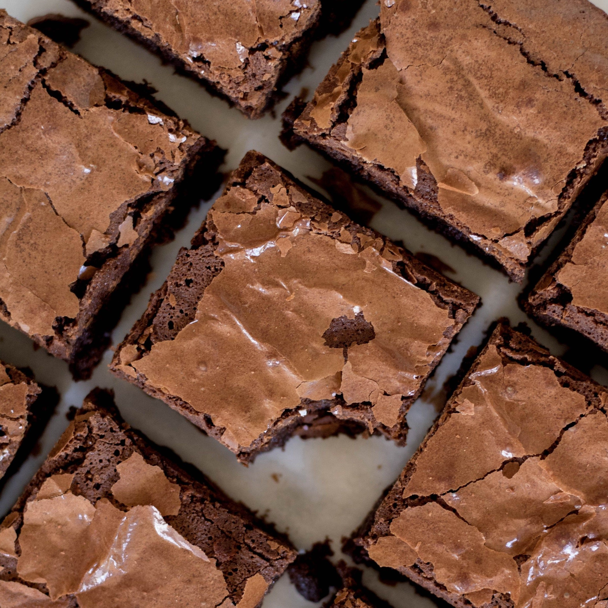
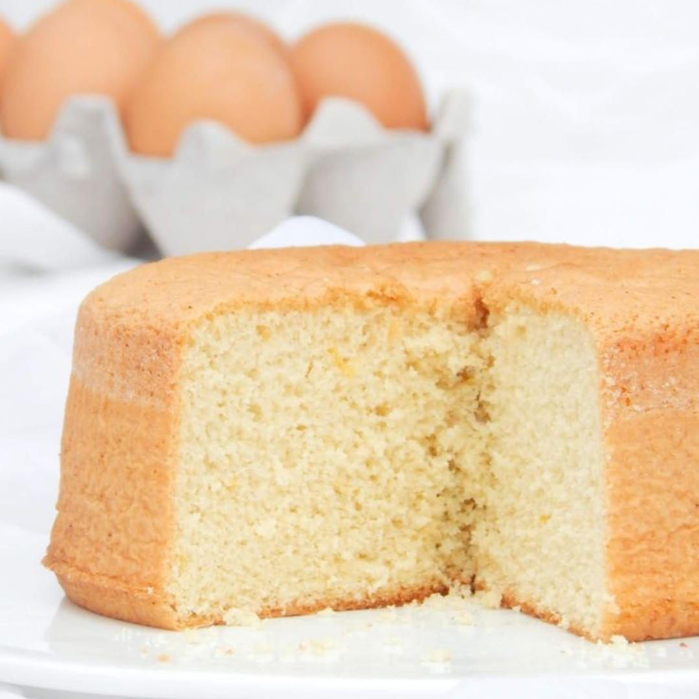
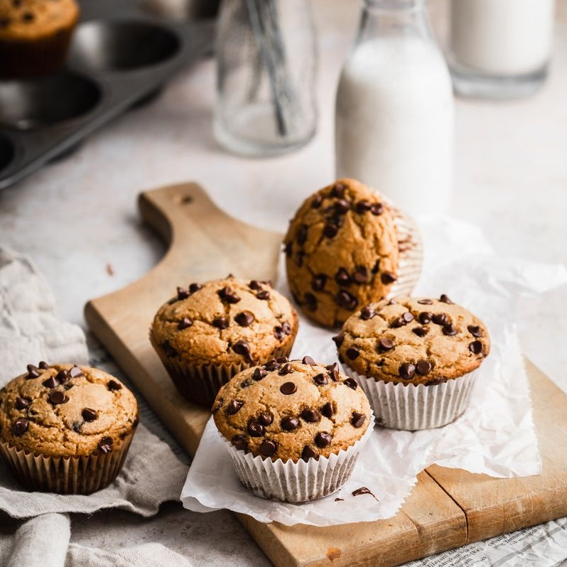
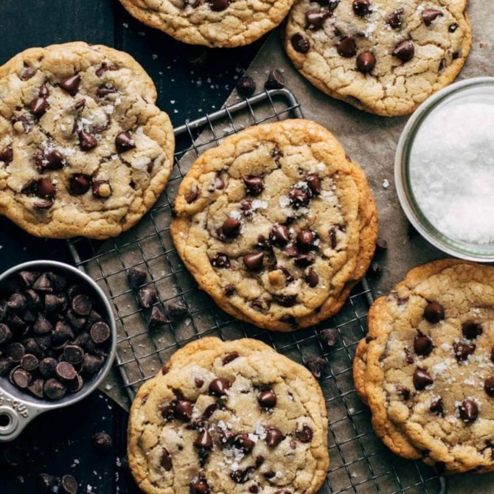
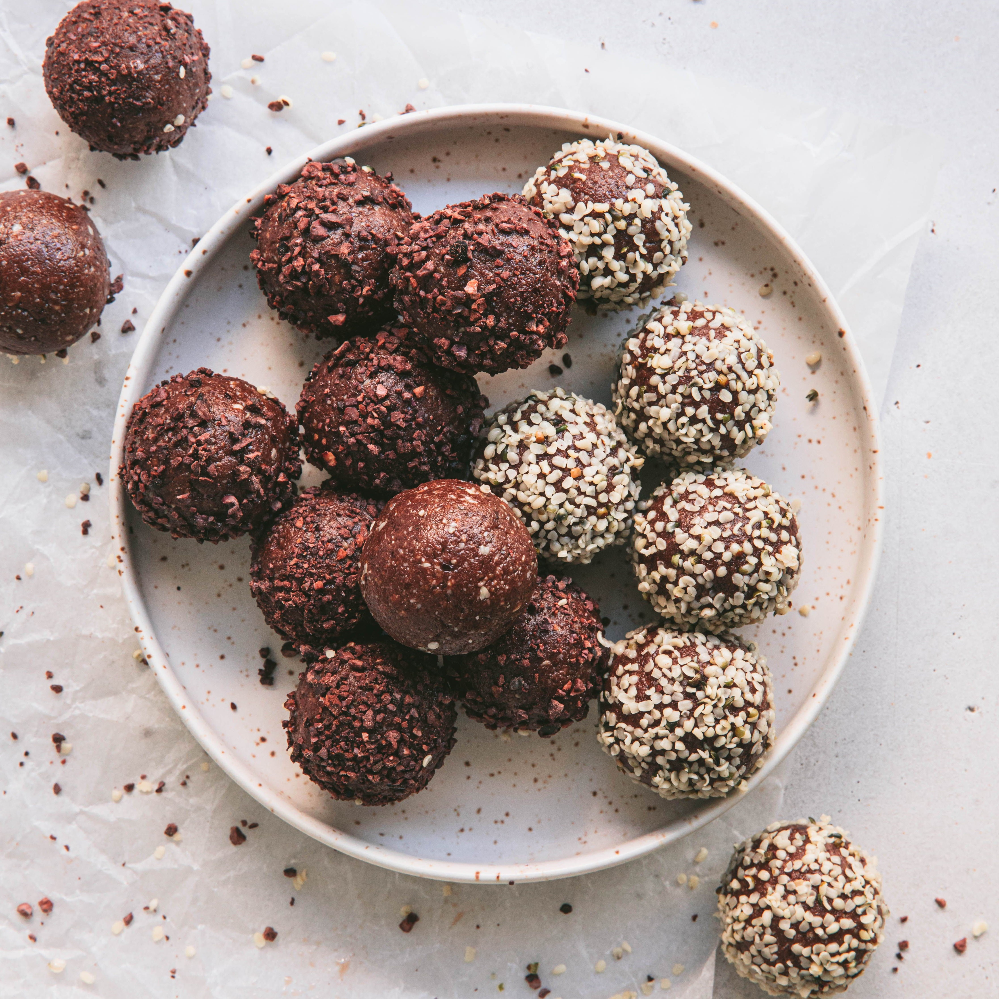
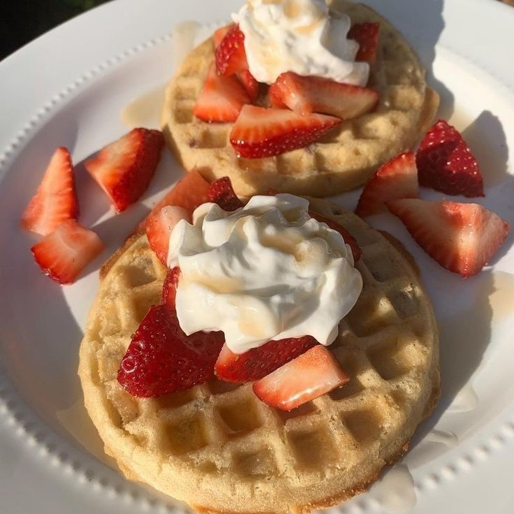
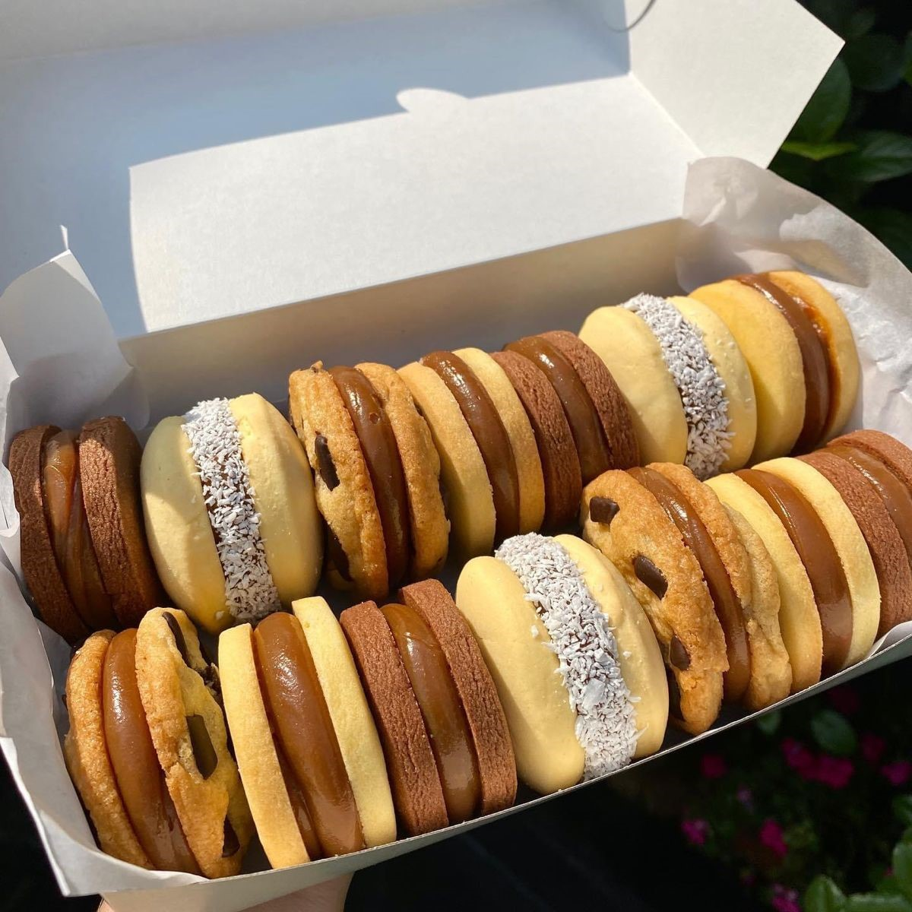

Recetas que podrás encontrar















Brownies

Ingredientes
- 100gr de manteca
- 150gr de chocolate
- 2 huevos
- 1 taza de azúcar
- 1/2 taza de nueces picadas
- 100gr de harina
Pasos
- Derretir e integrar la manteca y el chocolate picado.
- Batir los huevos con el azúcar hasta que queden bien blancos, esto es clave para que quede bien húmedo.
- Agregar el chocolate derretido y batir hasta que esté integrado. Sumar las nueces.
- Sumar el harina en dos partes e integrar todo.
- Batir fuerte antes de pasar el brownie de chocolate al molde.
- Colocar en una placa y cocinar a horno fuerte (200-220°) por 20 minutos.
Bizcochuelo

Ingredientes
- 3 huevos
- 1 taza de azúcar
- 1 taza de aceite (neutro)
- 2 tazas de harina 0000
- 1 cdita. de polvo para hornear
- 1 cdita. de esencia de vainilla
Pasos
- Mezclar los huevos con el azúcar y batir hasta que aclare un poco el color y la mezcla se vuelva espesa y crezca.
- Agregar el aceite y la esencia de vainilla y batir.
- Agregar la primera taza de harina junto con la cucharadita de polvo para hornear y mezclar con una espátula y movimientos envolventes.
- Una vez que se incorporó todo bien, agregar la segunda taza de harina y repetir el procedimiento de mezclado.
- Enmantecar y enharinar un molde y volcar la mezcla
- Llevar a horno (previamente precalentado) a 180º por entre 40 y 50 min aproximadamente.
Budín de limón

Ingredientes
Para la masa:
- 200 gr. de manteca
- 200 gr. de azúcar
- 250 gr. de harina 0000
- 1 cda. de polvo de hornear (10 gr)
- Jugo de 1 limón (50 ml aproximadamente)
- 4 huevos medianos
- Ralladura de 2 limones
Para el glaseado
- Jugo y ralladura de 1 limón
- 250 gr de azúcar impalpable (o azúcar glass)
Pasos
Para la masa:
- Batir los huevos con el azúcar hasta homogeneizar.
- Agregar la manteca, la ralladura y el jugo de limón a la mezcla batiendo hasta que se incorpore bien.
- Añadir la harina y el polvo de hornear. Mezclar bien y verter en un molde tipo budín inglés o rectangular previamente enmantecado y enharinado.
- Llevar a horno moderado 170° por más o menos 40 o 45 minutos.
- Una vez que esté desmoldar y dejar enfriar sobre una rejilla metálica. Luego que enfríe glasear.
Para el glaseado:
- Colocar el azúcar Impalpable (o glass) en un bowl y agregar de a poco el limón.
- Mezclar bien ambos ingredientes, se debe obtener una consistencia líquida pero un poco espesa.
- Glasear el budín.
Muffins con chips

Ingredientes
- 280 gr. de harina leudante
- 120 gr. de chips de chocolate
- 120 gr.de azúcar
- 150 mililitros de leche
- 60 gr. de manteca
- 1 huevo
Pasos
- Batir la manteca y el azúcar hasta formar una mezcla homogénea. Agregar el huevo y la esencia de vainilla y batir 5 minutos más.
- Agregar la harina, la sal y el polvo de hornear sobre la mezcla, batir.
- Agregar la leche y batir 5 minutos más hasta formar una mezcla cremosa.
- Agregar los chips de chocolate y mezclar para integrarlos.
- Poner la mezcla en un molde para cupcakes con pilotines así no se pegan. Agrega mezcla hasta 3/4 de su capacidad máxima.
- Llevar los muffins al horno (previamente precalentado a 180º) durante 25 minutos a 180º C. Cuando estén listos dejar reposar 10/15 minutos fuera del horno.
Cookies

Ingredientes
- 350 gr. de harina leudante
- 200 gr. de mantequilla
- 200 gr. de azúcar
- 150 gr. de pepitas de chocolate
- 2 huevos
- 1 pizca de sal
- 1 cucharada de vainilla en polvo o de esencia de vainilla
Pasos
- Batir la manteca con el azúcar hasta tener una crema, agregar la vainilla y los huevos y mezclar.
- Incorporar las pepitas de chocolate. Tiene que quedar una masa compacta y moldeable con aspecto de migas
- Formar bolitas y las aplastarlas con la mano.
- Llevar a horno medio (previamente precalentado) por 10 o 15 min. o hasta que comiencen a dorarse. Retirar y dejar enfriar a temperatura ambiente.
Trufas

Ingredientes
- 1 taza de avena instantánea
- 2 cucharadas de dulce de leche
- 3 cucharadas de cacao
- 1 cucharada de leche
- 50 gr. de manteca
Pasos
- Mezclar la avena, el cacao y el dulce de leche
- Derretir la manteca y agregarla a la mezcla junto con la cucharada de leche
- Dejar enfriar
- Formar bolitas y pasarlas por coco rallado, nueces picadas, chocolate rallado o por lo que más te guste!
Waffles

Ingredientes
- 300 gr. de harina común
- 550 cc. de leche
- 75 cc. de aceite de girasol
- 1 cdita. de polvo para hornear
- 2 huevos
- 1 pizca de sal
Pasos
- Mezclar la harina con el polvo para hornear y los huevos
- Agregar la leche y batir rápido para que no se formen grumos
- Agregar el acite y mezclar bien
- Dejar reposar por 30 min. como mínimo
- Cocinarlos en la wafflera
- Servir acompañado con dulce de leche y nueces, crema chantilly y frutos rojos, salsa de chocolate, etc.
Alfajores

Ingredientes
- 200 gr. de harina
- 300 gr. de fécula de maíz
- 2 cditas. de polvo de hornear
- 200 gr. de manteca
- 150 gr. azúcar
- 3 yemas
- 1 cucharada esencia de vainilla
- 1 cdita. ralladura de limón
- dulce de leche
- coco rallado
Pasos
- Mezclar la fécula de maíz, la harina, el bicarbonato y el polvo para hornear.
- A parte, batir la manteca con el azúcar. Agregar las yemas de a una, mezclando bien.
- Incorporar poco a poco los ingredientes secos. Incorporar la esencia de vainilla y la ralladura de limón y mezclar bien hasta formar una masa homogénea.
- Estirar la masa (sin amasarla) hasta que quede de 1/2 cm de espesor sobre una mesa espolvoreada con harina. Cortar con moldes en forma circular.
- Colocar en una placa limpia y cocinar en horno moderado durante 15 minutos. Una vez que las tapas estén cocidas dejarlas enfriar.
- Formar los alfajores, uniéndolos de a dos tapas con abundante dulce de leche en el medio y agregar el coco rallado.